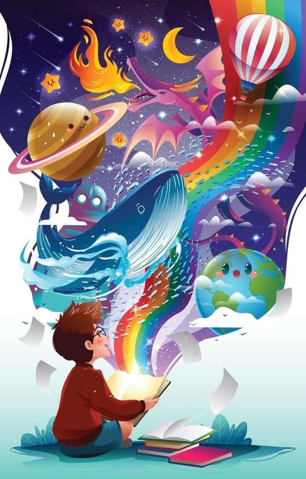

Bienvenidos
"La lectura son procesos, que van desde entender las palabras y descifrar los códigos hasta crear una imagen crítica de los textos leídos"

Como sabrás la lectura es parte importante de los procesos de aprendizaje, pero generalmente se le ve como algo tedioso y poco creativo. Esto se debe a que ésta se desarrolla por procesos que van desde el entendimiento de los códigos de lenguaje simple a la creación de una estructura compleja de ideas y respuestas sujetos a los temas.
En esta unidad te damos la bienvenida a un nuevo enfoque lector, que no es solo descifrar sonidos y juntar palabras; es una experiencia mucho más increíble que viene acompañada de viajes por nubes y riscos de aventuras que verás a través de los miles de personajes que te invitarán a conocer sus historias y misiones.
Anímate a descubrir este lado de ser lector, mientras cambias tus perspectivas y amplias tus conocimientos.
Comenzaremos con:
- Pregunta clave de inicio (Socialización presencial, 60 min.)
- Lectura de contenido vía digital (15 -20 min.)
- Introducción: ¿Qué es leer?
- Enfoques dinámicos de lectura
- Leer vs Leer